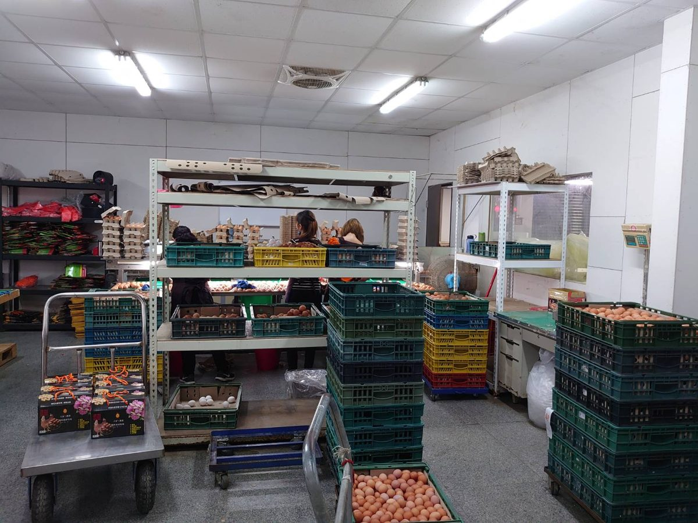
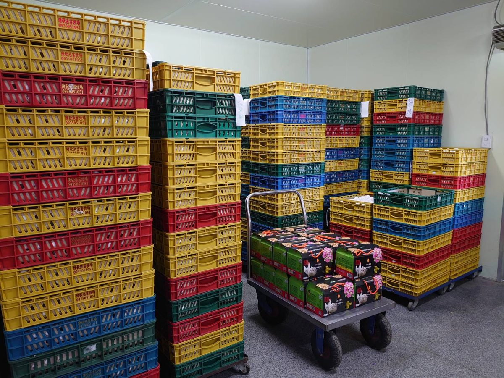
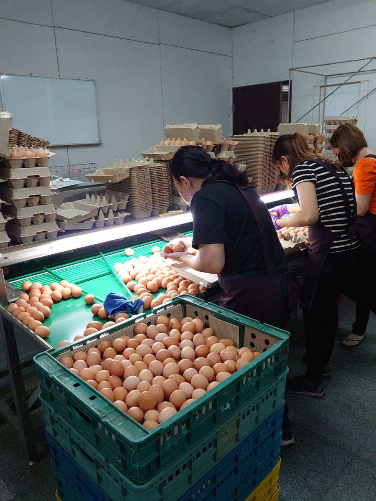

陳秋池的品牌故事
～ 這是一顆因愛而誕生的雞蛋 ～
起源
「陳秋池畜牧場」創立於民國70年，經營畜牧場超過30年。陳秋池老闆——一個在大都市中打拼的奮鬥青年，因著不斷努力已小有成就。多年後當記者採訪他，問他為什麼花上超過 3,500萬元、砸鍋賣鐵也要蓋出這間自動化蛋雞場？在陳老闆爽朗笑聲的背後，其實藏了一段悲痛的故事。
原本陳老闆也是傳統用雞籠飼養蛋雞的蛋農。傳統蛋雞場的糞便一到兩個月才清一次，而雞糞便中有大量玉米等未消化飼料，會產生黃麴毒素。他的母親與姐姐原本都在蛋廠裡幫忙，竟相繼因肺腺癌過世。有感於傳統養雞場環境惡劣，他立下更大的理想和堅持——給消費者一顆「最好的蛋」！
勇於冒險，建立崇高而清楚的目標，才能屹立於嚴峻、蛻變的環境中。保障消費者的安全與安心是我的職責，讓國人「相遇雞蛋，找到健康」。
— 陳秋池 經營理念
— 陳秋池 經營理念
從傳統籠飼到五星級自動化雞舍
陳老闆痛定思痛，把家裡三十年的傳統籠飼改建成全自動化工廠，更開創自動化硬體設備畜牧業先例！不惜成本持續斥資上億元改善飼養環境：
- 『全自動電腦環控、密閉水簾雞舍』降低外部病源、空氣與飼料污染的風險
- 聰明控溫控光、自動化定量輸送飼料與飲水
- 自動收蛋，減少破蛋產生的污染
- 自動化清理雞糞做為堆肥，營造最舒適的產蛋環境
成立生物科技研發部門，自組團隊經過無數日夜研發、失敗、改進、修正，開發出數百種草本營養配方，以高貴草本營養配方飼料餵養，讓雞隻體質強健、不易生病。堅持雞隻絕不施打生長激素、抗生素與使用禁藥。



陳秋池畜牧場實景｜彰化二林